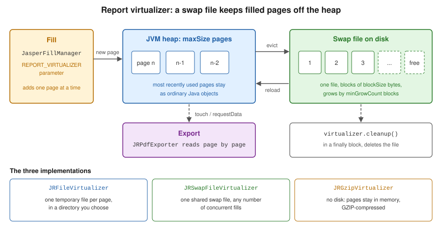

Large Reports & Performance
|
This content was generated with the assistance of AI and should be verified against the official documentation before being relied on in production. |
Baseline date: 2026-10-09. A report that works for a hundred rows can fail for a million, and the failure is rarely in the template: it is the memory taken by the filled pages, or the time spent compiling the same template again and again. This page collects the tools JasperReports 7.0.8 provides for both problems and applies them to the monthly sales report of the Bookshelf Billing service. The tools are, in the order a request meets them: compiling templates once, at build time, and caching the result; filling with a virtualizer so that finished pages are moved out of the heap; filling on a separate thread so that a long fill can be cancelled; and reading Excel input with the lighter FastExcel reader.
The examples were compiled with maven.compiler.release 21 and run against JasperReports 7.0.8 in a throwaway Maven
project, and the numbers in the measurement table come from those runs. The Ant build and the FastExcel snippet were
not run on this page; the FastExcel reader was run on the data
sources page. Templates use the v7 JRXML syntax (<element kind="...">), described in
JRXML Report Design. The architecture of the compile, fill
and export stages is in JasperReports Architecture & Lifecycle.
Where the time and the memory go
Filling is the stage that builds a JasperPrint: a list of pages, each holding every positioned element of that page.
For a report of 200,000 detail rows, with a few text fields per row, that is millions of objects, and they all stay on
the heap until the export has finished, because the exporter needs the whole document. The official virtualizer sample
describes the same risk: during the fill many objects are generated, and there is always the danger of an
out-of-memory error before the fill concludes. A virtualizer is the answer to that specific problem. The other costs are
different:
-
Compiling a template, which generates and compiles Java code for its expressions, takes far longer than filling a small report. It must happen once per template, not once per request.
-
Loading a
.jasperfile from the classpath is cheap, but not free, and a compiledJasperReportis immutable and safe to share between threads, so it is loaded once and kept. -
A fill that nobody waits for any more (a user closed the browser, a timeout fired) should stop instead of running to the end.
Before reaching for any of these, measure. The cheapest saving needs no new code: feed the report from a streaming data
source instead of loading all the rows into a List, as discussed in
Generating Reports from Databases & Services.
Compile at build time
The JRXML files of a service are source files, and the official Ant and Maven samples make the same point: just as
.java files become .class files during the build, .jrxml files should become .jasper files during the build, and
only the compiled files need to be deployed, as classpath resources. The service then never pays the compile cost, and
it does not need a Java compiler for expressions at run time. The cost of this arrangement is the version coupling
described in the architecture page: a .jasper file belongs to the exact library version that compiled it, so it is
a build output and is never checked in.
The Maven plugin
The plugin net.sf.jasperreports:jasperreports-maven-plugin exists since 7.0.6. Its goal prefix is jasperreports and
it has four goals: compile, testCompile, decompile and update. By default compile reads .jrxml files from
${project.basedir}/src/main/reports, writes .jasper files to ${project.build.directory}/reports keeping the
relative folder layout, compiles on 1.5C threads (one and a half threads per CPU core, set with the threads
parameter), and can be switched off with the property jasperreports.compile.skip. By default the plugin uses the
JasperReports version equal to its own version, so keeping the plugin version and the library version in one Maven property
avoids a mismatch. Other versions are selected with the jasperreports-maven-plugin-bom dependency, as the official
sample shows.
One detail is easy to miss and was checked by running it: the goal has no default lifecycle phase. A plugin declared
without an <execution> that names a <phase> compiled nothing during mvn package, and the build still succeeded.
Bind the goal to a phase explicitly, and send the output to a folder under target/classes so that Maven packages the
.jasper files into the jar.
<?xml version="1.0" encoding="UTF-8"?>
<project xmlns="http://maven.apache.org/POM/4.0.0"
xmlns:xsi="http://www.w3.org/2001/XMLSchema-instance"
xsi:schemaLocation="http://maven.apache.org/POM/4.0.0 https://maven.apache.org/xsd/maven-4.0.0.xsd">
<modelVersion>4.0.0</modelVersion>
<groupId>com.bookshelf</groupId>
<artifactId>billing-reports</artifactId>
<version>1.0.0</version>
<packaging>jar</packaging>
<properties>
<maven.compiler.release>21</maven.compiler.release>
<project.build.sourceEncoding>UTF-8</project.build.sourceEncoding>
<jasperreports.version>7.0.8</jasperreports.version>
</properties>
<dependencies>
<dependency>
<groupId>net.sf.jasperreports</groupId>
<artifactId>jasperreports</artifactId>
<version>${jasperreports.version}</version>
</dependency>
<dependency>
<groupId>net.sf.jasperreports</groupId>
<artifactId>jasperreports-pdf</artifactId>
<version>${jasperreports.version}</version>
</dependency>
<dependency>
<groupId>net.sf.jasperreports</groupId>
<artifactId>jasperreports-fastexcel</artifactId>
<version>${jasperreports.version}</version>
</dependency>
</dependencies>
<build>
<plugins>
<plugin>
<groupId>net.sf.jasperreports</groupId>
<artifactId>jasperreports-maven-plugin</artifactId>
<version>${jasperreports.version}</version>
<executions>
<execution>
<id>compile-reports</id>
<phase>generate-resources</phase>
<goals>
<goal>compile</goal>
</goals>
<configuration>
<sourceDirectory>${project.basedir}/src/main/reports</sourceDirectory>
<outputDirectory>${project.build.outputDirectory}/reports</outputDirectory>
</configuration>
</execution>
</executions>
</plugin>
</plugins>
</build>
</project>With this pom.xml and the template below saved as src/main/reports/monthly-sales.jrxml, mvn package produced
reports/monthly-sales.jasper inside the jar (about 15 KB). The expressions were compiled without the
jasperreports-jdt artifact on the class path, with the JDK compiler, which is what the plugin used here. The plugin also
printed a warning that Log4j had no logging provider, which is harmless. The decompile goal does the reverse
(recreating .jrxml from .jasper, useful when only the compiled file of an old report survives) and update applies
ReportUpdater implementations to all templates, for instance to bring them to a newer schema, as the official sample
describes.
<?xml version="1.0" encoding="UTF-8"?>
<jasperReport name="monthly-sales" language="java" pageWidth="595" pageHeight="842"
columnWidth="515" leftMargin="40" rightMargin="40" topMargin="40" bottomMargin="40">
<field name="category" class="java.lang.String"/>
<field name="title" class="java.lang.String"/>
<field name="amount" class="java.math.BigDecimal"/>
<variable name="total" calculation="Sum" class="java.math.BigDecimal">
<expression><![CDATA[$F{amount}]]></expression>
</variable>
<title height="40">
<element kind="textField" x="0" y="0" width="515" height="30" fontSize="18" bold="true">
<expression><![CDATA["Bookshelf monthly sales"]]></expression>
</element>
</title>
<pageFooter height="25">
<element kind="textField" x="0" y="5" width="515" height="15" hTextAlign="Right">
<expression><![CDATA["Page " + $V{PAGE_NUMBER}]]></expression>
</element>
</pageFooter>
<detail>
<band height="18">
<element kind="textField" x="0" y="0" width="120" height="16">
<expression><![CDATA[$F{category}]]></expression>
</element>
<element kind="textField" x="120" y="0" width="280" height="16">
<expression><![CDATA[$F{title}]]></expression>
</element>
<element kind="textField" x="400" y="0" width="115" height="16" hTextAlign="Right" pattern="#,##0.00">
<expression><![CDATA[$F{amount}]]></expression>
</element>
</band>
</detail>
<summary height="30">
<element kind="textField" x="365" y="5" width="150" height="20" bold="true" hTextAlign="Right" pattern="#,##0.00">
<expression><![CDATA[$V{total}]]></expression>
</element>
</summary>
</jasperReport>This is the plugin documented in the JasperReports Maven plugin sample, and the artifact is on Maven Central.
The Ant task
Builds that still use Ant have the JRAntCompileTask, which behaves like Ant’s javac task: it scans a source folder
(the srcdir attribute, or nested src filesets) and writes .jasper files to destdir, preserving the folder
structure. In 7.0.8 it is in a separate artifact, net.sf.jasperreports:jasperreports-ant, which depends on Ant 1.10
and on the core library; the classes JRAntCompileTask and JRAntApiWriteTask were found in that jar, and none of them
is in the core jar. The task definition below follows the official sample, which also lists keepjava, xmlvalidation and
threads among the attributes. This example was not run, because Ant is not part of the Maven project used for this page.
<project name="bookshelf-reports" default="compile">
<path id="jr.classpath">
<fileset dir="lib" includes="*.jar"/>
</path>
<taskdef name="jrc" classname="net.sf.jasperreports.ant.JRAntCompileTask">
<classpath refid="jr.classpath"/>
</taskdef>
<target name="compile">
<mkdir dir="build/reports"/>
<jrc srcdir="src/main/reports" destdir="build/reports" tempdir="build/reports"
keepjava="false" xmlvalidation="true" threads="1.5C">
<classpath refid="jr.classpath"/>
<include name="**/*.jrxml"/>
</jrc>
</target>
</project>This derives from the Ant compile sample.
Compiler artifacts (finding O17)
The books consulted for this section describe a compiler that needed the JDK’s tools.jar, a JDK 1.3 or Jikes, or
BeanShell for expressions. All of that is outdated. A modern JDK has no tools.jar; the library compiles expressions
with the compiler of the running JDK, with the Eclipse compiler from jasperreports-jdt, or with Groovy or JavaScript
from jasperreports-groovy and jasperreports-javascript, depending on the language attribute of the template and the
artifacts on the class path. The practical answer to "which compiler do I need in production" is none: compile at build
time with jasperreports-maven-plugin, which needs 7.0.6 or later, and ship the .jasper files. The compiler
configuration is covered in
Expressions, Parameters, Fields & Variables.
Cache the compiled reports
A compiled JasperReport is immutable, so one instance is shared by all threads. The class below loads each .jasper file
from the classpath on first use and keeps it in a ConcurrentHashMap. computeIfAbsent guarantees that two requests
arriving together load a template once. It was run against 7.0.8 together with the examples that follow. The same
class becomes a Spring bean without change, and the chosen wiring is shown in
Spring Boot Integration.
package bookshelf;
import java.io.IOException;
import java.io.InputStream;
import java.util.Map;
import java.util.concurrent.ConcurrentHashMap;
import net.sf.jasperreports.engine.JRException;
import net.sf.jasperreports.engine.JasperReport;
import net.sf.jasperreports.engine.util.JRLoader;
/** Loads the .jasper files built by jasperreports-maven-plugin once and keeps them. */
public class CompiledReports {
private final Map<String, JasperReport> cache = new ConcurrentHashMap<>();
public JasperReport get(String name) {
return cache.computeIfAbsent(name, this::load);
}
private JasperReport load(String name) {
String resource = "/reports/" + name + ".jasper";
try (InputStream in = CompiledReports.class.getResourceAsStream(resource)) {
if (in == null) {
throw new IllegalStateException("Missing compiled report " + resource
+ ": did jasperreports-maven-plugin run?");
}
return (JasperReport) JRLoader.loadObject(in);
} catch (IOException | JRException e) {
throw new IllegalStateException("Cannot load " + resource, e);
}
}
}Two limits of this cache are worth stating. It never reloads, so a template edited on disk needs a restart; if
templates are uploaded while the service runs, add an eviction rule keyed on a version number, and compile the JRXML
on a cache miss. And a JasperReport loaded from a .jasper file that was compiled by another library version fails to
load, so a mismatch shows up at the first request unless the application loads its templates at start-up. The load
method is documented in the
JRLoader Javadoc.
The configuration reference also lists a data cache, with the properties net.sf.jasperreports.data.cache.recordable,
net.sf.jasperreports.data.cache.persistable and net.sf.jasperreports.data.cache.included, which concerns recording the
data of a report. Its behaviour in a plain library application was not tested for this page, and it is not needed for
the techniques described here.
Virtualizers
The virtualizer is the main tool for large documents. It is configured in Java, not in the JRXML: the official sample
states that virtualization is not configured in the template. The interface is net.sf.jasperreports.engine.JRVirtualizer,
and the three implementations in net.sf.jasperreports.engine.fill are:
| Class | How it stores the pages |
|---|---|
|
One temporary file per virtualized page, in a directory given to the constructor. Files are removed by |
|
One swap file, |
|
No disk: the pages stay in memory but GZIP-compressed. Less memory is saved, and the cost in time is lower than for the file-based variants. |
All three keep at most maxSize pages as ordinary objects (the first constructor argument), choose the pages to evict
by least recent use, and reload an evicted page when the filler or the exporter touches it. The figure shows the swap
file variant.

A virtualizer is given to the fill through the built-in parameter JRParameter.REPORT_VIRTUALIZER. One instance can serve
several fills at once; the consequence, stated in the sample, is that maxSize applies to all of them together, not to
each. A page of the document is the unit that is virtualized, and for non-paginated reports or very large pages a
page is split into virtual pages of net.sf.jasperreports.virtual.page.element.size elements (2000 by default). Two
other properties come from the configuration reference: net.sf.jasperreports.frame.virtualization.enabled (true by
default) lets the contents of big frames be virtualized as well, and net.sf.jasperreports.virtualizer.files.delete.on.exit
(true by default) asks the JVM to delete the temporary files at exit as a last resort.
A complete example
The program below fills the template above with rows generated on the fly, so that the data itself never fills the heap,
and chooses the virtualizer from the first command-line argument: none, swap, file or gzip. Three details are
essential. setReadOnly(true) is called on the virtualizer once the fill has finished and the pages will only be read,
which avoids writing a page back to disk after it has been exported; the method is declared in
JRAbstractLRUVirtualizer, the base class of the three implementations, not in the JRVirtualizer interface, so the
variable has that type. The parameters are a new HashMap<>(), because a Map.of(...) is rejected as the parameter map.
And cleanup() is in a finally block, because it is the call that deletes the swap or page files; waiting for garbage
collection can leave gigabytes on a service’s disk.
The data class below is a plain JavaBean with getters. A Java record was found not to work as a bean data source,
because the bean source reads getX() accessors, so records are avoided in the examples of this section.
package bookshelf;
import java.math.BigDecimal;
public class SaleRow {
private final String category;
private final String title;
private final BigDecimal amount;
public SaleRow(String category, String title, BigDecimal amount) {
this.category = category;
this.title = title;
this.amount = amount;
}
public String getCategory() { return category; }
public String getTitle() { return title; }
public BigDecimal getAmount() { return amount; }
}SaleRow is what a JRBeanCollectionDataSource would receive from a repository. The program below uses a generated
source instead, so that it can produce a million rows in a test.
package bookshelf;
import java.math.BigDecimal;
import java.nio.file.Files;
import java.nio.file.Path;
import java.util.HashMap;
import java.util.Map;
import net.sf.jasperreports.engine.JRDataSource;
import net.sf.jasperreports.engine.JRField;
import net.sf.jasperreports.engine.JRParameter;
import net.sf.jasperreports.engine.JasperExportManager;
import net.sf.jasperreports.engine.JasperFillManager;
import net.sf.jasperreports.engine.JasperPrint;
import net.sf.jasperreports.engine.JasperReport;
import net.sf.jasperreports.engine.fill.JRAbstractLRUVirtualizer;
import net.sf.jasperreports.engine.fill.JRFileVirtualizer;
import net.sf.jasperreports.engine.fill.JRGzipVirtualizer;
import net.sf.jasperreports.engine.fill.JRSwapFileVirtualizer;
import net.sf.jasperreports.engine.util.JRSwapFile;
public class VirtualizedSales {
/** Streams generated rows so the data itself never fills the heap. */
static class GeneratedSales implements JRDataSource {
private final int rows;
private int index;
GeneratedSales(int rows) { this.rows = rows; }
@Override
public boolean next() { return ++index <= rows; }
@Override
public Object getFieldValue(JRField field) {
return switch (field.getName()) {
case "category" -> "Category " + (index % 7);
case "title" -> "Book title number " + index;
case "amount" -> BigDecimal.valueOf(index % 5000, 2);
default -> null;
};
}
}
public static void main(String[] args) throws Exception {
String mode = args.length > 0 ? args[0] : "none";
int rows = args.length > 1 ? Integer.parseInt(args[1]) : 200_000;
Path out = Files.createDirectories(Path.of("target", "out"));
Path tmp = Files.createDirectories(Path.of("target", "swap"));
JasperReport report = new CompiledReports().get("monthly-sales");
JRAbstractLRUVirtualizer virtualizer = switch (mode) {
case "swap" -> new JRSwapFileVirtualizer(100, new JRSwapFile(tmp.toString(), 4096, 1024));
case "file" -> new JRFileVirtualizer(100, tmp.toString());
case "gzip" -> new JRGzipVirtualizer(100);
default -> null;
};
Map<String, Object> params = new HashMap<>();
if (virtualizer != null) {
params.put(JRParameter.REPORT_VIRTUALIZER, virtualizer);
}
long start = System.nanoTime();
try {
JasperPrint print = JasperFillManager.fillReport(report, params, new GeneratedSales(rows));
long fillMs = (System.nanoTime() - start) / 1_000_000;
if (virtualizer != null) {
virtualizer.setReadOnly(true); // pages are exported, never modified again
}
JasperExportManager.exportReportToPdfFile(print, out.resolve("sales-" + mode + ".pdf").toString());
long totalMs = (System.nanoTime() - start) / 1_000_000;
System.out.printf("%s: %d pages, fill %d ms, fill+export %d ms%n",
mode, print.getPages().size(), fillMs, totalMs);
} finally {
if (virtualizer != null) {
virtualizer.cleanup(); // deletes the swap or page files
}
}
}
}Run it as java -Xmx64m -cp <classpath> bookshelf.VirtualizedSales swap 1000000, where the class path is the output of
mvn dependency:build-classpath plus target/classes. The table shows what happened on one developer laptop, under
JDK 26 with the code compiled for release 21; each line is a single run, not a benchmark, and only the relative
order matters.
| Heap and rows | Virtualizer | Pages | Fill and export | Result |
|---|---|---|---|---|
256 MB, 200,000 rows |
none |
5,001 |
2.9 s |
Completed. |
256 MB, 200,000 rows |
swap file |
5,001 |
3.2 s |
Completed, fill 1.1 s against 0.8 s without. |
64 MB, 1,000,000 rows |
none |
|
||
64 MB, 1,000,000 rows |
swap file |
25,001 |
12.5 s |
Completed. |
64 MB, 1,000,000 rows |
file per page |
25,001 |
15.8 s |
Completed. |
64 MB, 1,000,000 rows |
GZIP |
25,001 |
19.3 s |
Completed. |
Three lessons follow from the table, and each agrees with the official sample. A virtualizer is not needed while the report
fits comfortably in the heap, and it costs time (here a third more for the fill alone). With the same tiny heap and
the same data, the run without a virtualizer failed and the three with a virtualizer finished. And in this test the GZIP
variant was the slowest, although it writes nothing to disk; the sample says its effect on the fill time should be
smaller than that of the file-based ones, so the ordering depends on the data and the machine, and has to be measured
with the real report.
The pages were produced, and each run left the temporary folder empty after cleanup().
The virtualizer protects the fill; the export and the output are separate costs that this test did not isolate, so
a very large document may still need more heap than the table suggests. Write the PDF to a file or to the HTTP
response stream instead of building a byte[]. Streaming large PDFs from a controller is the subject of
Spring Boot Integration.
This example derives from the
JasperReports virtualizer sample, and the
classes are documented in the Javadoc of
JRVirtualizer,
JRSwapFileVirtualizer and
JRSwapFile.
Choosing and tuning
Use JRSwapFileVirtualizer as the default for a service: it creates one file, not one per page, and shares it among
the concurrent fills. Use JRFileVirtualizer when the files must be easy to inspect or to put on a specific volume.
Use JRGzipVirtualizer when there is no writable disk (a read-only container file system) and the report is only
moderately large. The maxSize argument is the number of pages that stay in memory: a smaller number saves memory and
costs more disk traffic, and since the virtualizer is shared, the sum of the memory of all concurrent fills is what
matters. The JRSwapFile arguments are the directory, the block size and the number of blocks added when the file is
full. Use a directory that is writable
and large enough in the container, and give each service instance its own directory.
Do not share one virtualizer between fills of unrelated requests without thinking about the cleanup() call: cleaning it up
while another fill still uses it would remove its pages. The safe pattern in a request handler is one virtualizer per
request, created before the fill and cleaned up in finally after the response has been written, which is what the
program above does. The temporary directory should also be cleaned at start-up, since a killed process cannot run its
finally block.
Asynchronous filling and cancelling
JasperFillManager.fillReport blocks the calling thread. For a report that may take minutes, AsynchronousFillHandle in
net.sf.jasperreports.engine.fill runs the fill on its own thread, reports the outcome to an
AsynchronousFilllListener (the name has three l letters in the API) and, above all, can be cancelled: the Javadoc
states that the main benefit of this class is that the fill can be cancelled. The handle is created with
createHandle(report, parameters, dataSource), the listener is added, and startFill() returns at once. The listener
has three methods: reportFinished(JasperPrint), reportCancelled() and reportFillError(Throwable). Cancelling is
requested with cancellFill(), whose name is also spelled with two l letters. The example turns the three callbacks
into a CompletableFuture, fills a small report to completion, then starts a report of five million rows and cancels it
after 300 ms. Run against 7.0.8 it printed finished: 501 pages and then cancelled before finishing, and the
JVM exited normally.
package bookshelf;
import java.util.HashMap;
import java.util.Map;
import java.util.concurrent.CompletableFuture;
import java.util.concurrent.TimeUnit;
import net.sf.jasperreports.engine.JRException;
import net.sf.jasperreports.engine.JasperPrint;
import net.sf.jasperreports.engine.JasperReport;
import net.sf.jasperreports.engine.fill.AsynchronousFillHandle;
import net.sf.jasperreports.engine.fill.AsynchronousFilllListener;
public class AsyncFill {
/** Starts the fill on its own thread and exposes the result as a future. */
public static AsynchronousFillHandle start(JasperReport report, int rows,
CompletableFuture<JasperPrint> result) throws JRException {
Map<String, Object> params = new HashMap<>();
AsynchronousFillHandle handle = AsynchronousFillHandle.createHandle(
report, params, new VirtualizedSales.GeneratedSales(rows));
handle.addListener(new AsynchronousFilllListener() {
@Override public void reportFinished(JasperPrint print) { result.complete(print); }
@Override public void reportCancelled() { result.cancel(false); }
@Override public void reportFillError(Throwable t) { result.completeExceptionally(t); }
});
handle.startFill();
return handle;
}
public static void main(String[] args) throws Exception {
JasperReport report = new CompiledReports().get("monthly-sales");
CompletableFuture<JasperPrint> done = new CompletableFuture<>();
start(report, 20_000, done);
JasperPrint print = done.get(1, TimeUnit.MINUTES);
System.out.println("finished: " + print.getPages().size() + " pages");
CompletableFuture<JasperPrint> cancelled = new CompletableFuture<>();
AsynchronousFillHandle handle = start(report, 5_000_000, cancelled);
Thread.sleep(300);
handle.cancellFill(); // the method name is spelled with two l in the API
try {
cancelled.get(1, TimeUnit.MINUTES);
} catch (java.util.concurrent.CancellationException e) {
System.out.println("cancelled before finishing");
}
}
}In a Spring Boot service the natural combination is to start the handle from a job running on a bounded executor, store
the handle by job id, and call cancellFill() from a "cancel" endpoint or when a timeout fires; with a virtualizer,
cleanup() still belongs in the code that finally disposes of the JasperPrint. The handle works on a thread of its
own, so the number of simultaneous fills is the application’s to limit: each fill holds a data source, possibly a database
connection, and some heap. This example derives from the
AsynchronousFillHandle Javadoc.
Scheduling many reports as batch jobs is described in
Generating Reports from Databases & Services.
Excel input with FastExcel
When the report data comes from a spreadsheet, the jasperreports-fastexcel artifact provides FastExcelDataSource in
net.sf.jasperreports.fastexcel. It reads .xlsx files only, through the streaming reader org.dhatim:fastexcel-reader
(0.18.4 in the dependency tree of 7.0.8), and extends the same base class (AbstractXlsDataSource) as the Apache POI
based ExcelDataSource, so the configuration methods are shared. It is the lighter, .xlsx-only alternative. Its constructors accept an InputStream, a File, a
path, or an already opened ReadableWorkbook. The data sources page runs both readers on the same workbook; the snippet
below only shows the swap, and it was not run again here.
import java.io.InputStream;
import java.nio.file.Files;
import java.nio.file.Path;
import java.util.HashMap;
import java.util.Map;
import net.sf.jasperreports.engine.JasperFillManager;
import net.sf.jasperreports.engine.JasperPrint;
import net.sf.jasperreports.engine.JasperReport;
import net.sf.jasperreports.fastexcel.FastExcelDataSource;
public class ExcelSales {
public static JasperPrint fill(JasperReport report, Path workbook) throws Exception {
try (InputStream in = Files.newInputStream(workbook)) {
FastExcelDataSource data = new FastExcelDataSource(in);
data.setUseFirstRowAsHeader(true);
Map<String, Object> params = new HashMap<>();
return JasperFillManager.fillReport(report, params, data);
}
}
}Use the POI-based reader when .xls files must be read, and FastExcel when the input is an .xlsx file. The
data sources page describes both readers, and the snippet
derives from the JasperReports data source sample
and the AbstractXlsDataSource Javadoc.
PDF exporter caching
The PDF exporter caches clipped images and SVG drawings, so a repeated image or drawing is reused instead of being
rendered and written again, which helps produce smaller PDF files. The library change log records this improvement under
version 6.20.6 (the 6.20.5 entry does not mention it), and it is built into the exporter, so it needs no configuration.
The rest is practical. The exporter is created for each export, the PDF exporter lives in the jasperreports-pdf
artifact, and the settings that affect export time, such as compression, are in
PDF Export Configuration. Fonts are an
important part of export cost, because each font file is read and embedded; the font extensions and their handling are in
Fonts & Internationalization. Before blaming the
exporter, profile a real document: in the runs of this page the fill of 200,000 rows took less than a third of the time
of the fill and export together.
Official documentation: the JasperReports Library change log.
A checklist for the sales report
For the monthly sales report of Bookshelf Billing, filled from PostgreSQL and exported to PDF, the order of work is:
-
Compile the template with
jasperreports-maven-pluginbound togenerate-resources, and load the.jasperfile once. -
Pass a streaming data source (a JDBC result set read with a fetch size) so that rows are not collected in a list.
-
Measure the heap of a realistic month. Add a
JRSwapFileVirtualizeronly if it is needed, withcleanup()infinally. -
Run long fills through
AsynchronousFillHandleon a bounded executor, with a timeout that callscancellFill(). -
Stream the PDF to its destination; do not hold it as a
byte[]. -
Keep a test that fills a large report under a small
-Xmx, as the example of this page does, to catch regressions.
More general production advice (thread safety, fonts in containers, headless AWT) belongs to the iText and JasperReports pages of this section, for example Testing & Performance with iText for the iText side.
References
-
JasperReports Architecture & Lifecycle on this site
-
Data Sources on this site
-
Expressions, Parameters, Fields & Variables on this site
-
Generating Reports from Databases & Services on this site